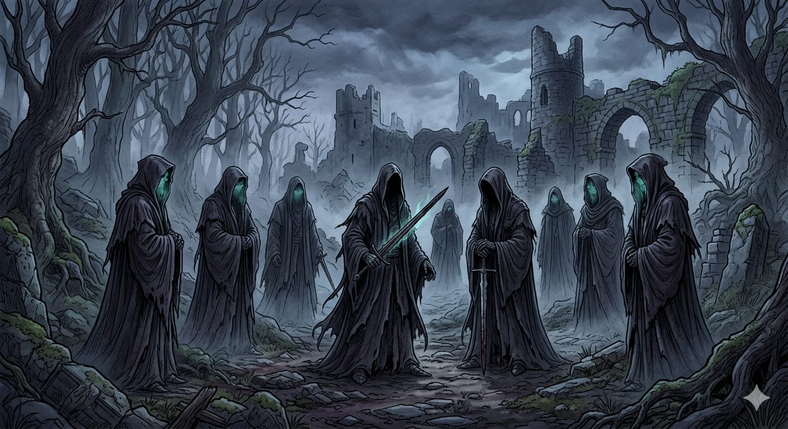
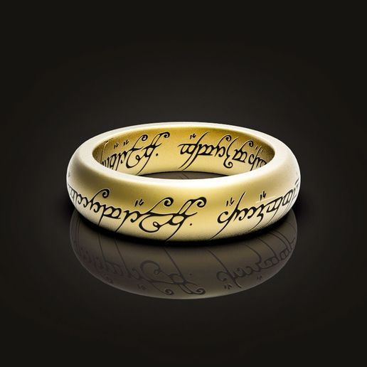

Os vinte anéis de poder
“Três Anéis para os Reis-Élficos sob o céu,
Sete para os Senhores-Anões em seus salões de pedra,
Nove para Homens Mortais, condenados a morrer,
Um para o Senhor do Escuro em seu trono sombrio
Na Terra de Mordor onde as Sombras se deitam.
Um Anel para a todos governar, Um Anel para encontrá-los,
Um Anel para a todos trazer e na escuridão aprisioná-los
Na Terra de Mordor onde as Sombras se deitam."
Os Três Anéis Élficos
Forjados pelos elfos, sem a influência direta de Sauron:
Narya (Anel do Fogo) - Portado por Gandalf
Nenya (Anel da Água) - Portado por Galadriel
Vilya (Anel do Ar) - Portado por Elrond
Os Sete Anéis dos Anões
Dados aos senhores anões.
Aumentavam riqueza e ganância.
Muitos foram destruídos por dragões ou recuperados por Sauron.
Os Nove Anéis dos Homens
Dados a líderes humanos.
Corromperam seus portadores, transformando-os nos Nazgûl (Espectros do Anel), totalmente controlados por Sauron.

O Um Anel (O Anel Supremo)
Criado por Sauron.
Controla todos os outros anéis.
Possui vontade própria e corrompe quem o usa.
Foi forjado na Montanha da Perdição (Mordor).
